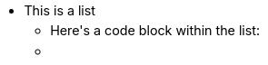
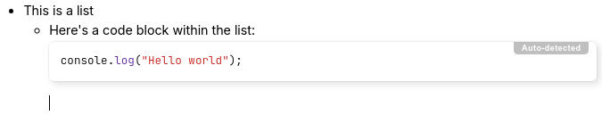

There are three types of lists supported by text notes:
For bulleted and numbered lists, it's possible to configure an alternative
marker such as squares or Roman numbering by pressing the
 icon. For numbered lists, it's also possible to specify the number to
start at or whether to count in reverse order.
icon. For numbered lists, it's also possible to specify the number to
start at or whether to count in reverse order.
* or
-followed by a space;1. or
1)followed by a space;- [ ] for
an unchecked item or [x] for a checked item.It possible to add content-level blocks such as headings, code blocks, tables within lists, as follows:
| 1 |

|
First, create a list. |
| 2 |  | Press Enter to create a new list item. |
| 3 |

|
Press Backspace to get rid of the bullet point. Notice the cursor position. |
| 4 |

|
At this point, insert any desired block-level item such as a code block. |
| 5 |  | To continue with a new bullet point, press Enter until the cursor moves to a new blank position. |
| 6 |

|
Press Enter once more to create the new bullet. |
The same principle applies to all three list types (bullet, numbered and to-do).
- [ ] for
an unchecked item or [x] for a checked item
while on an empty paragraph.